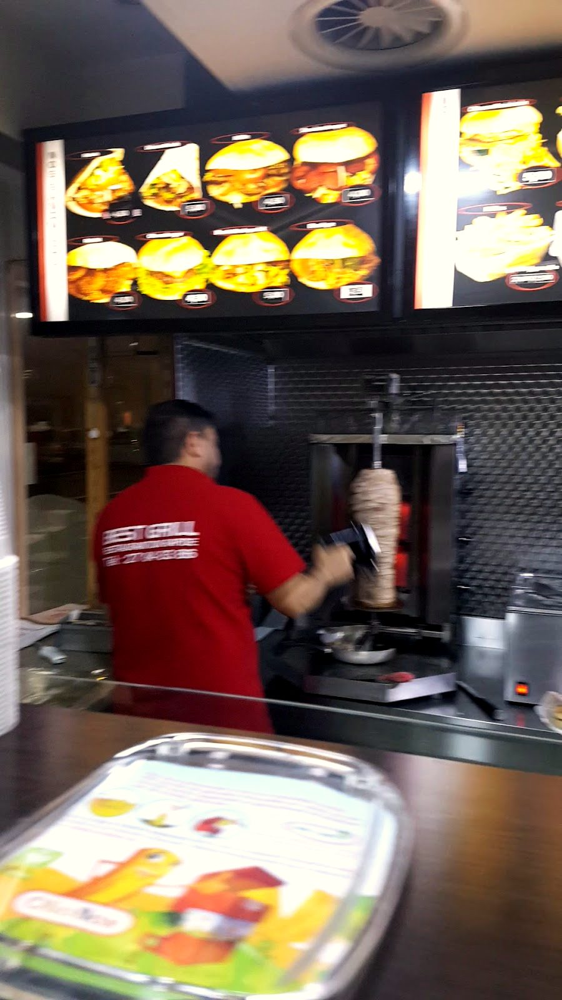
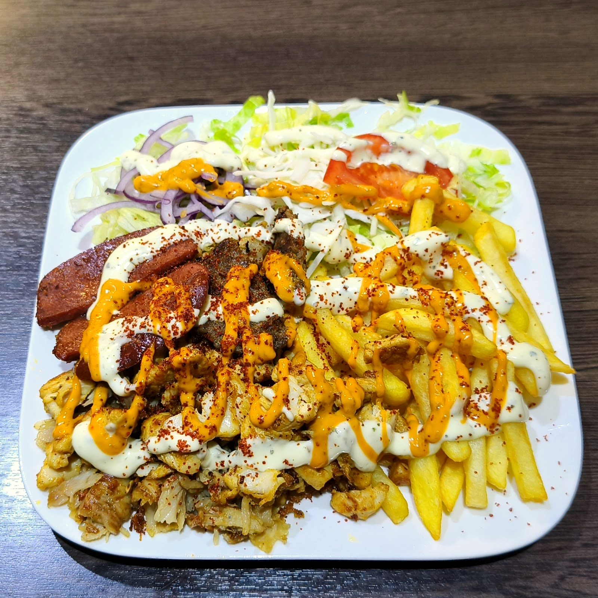
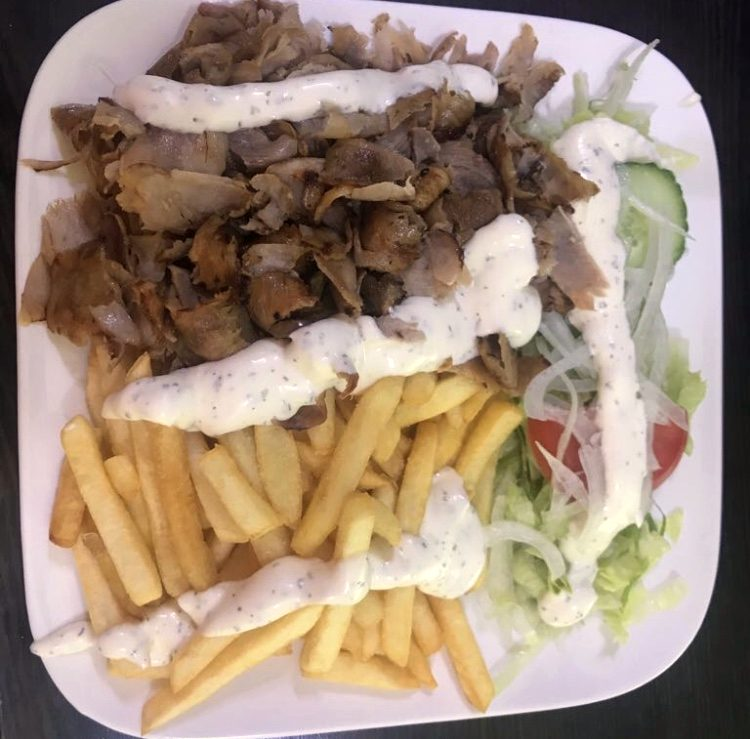
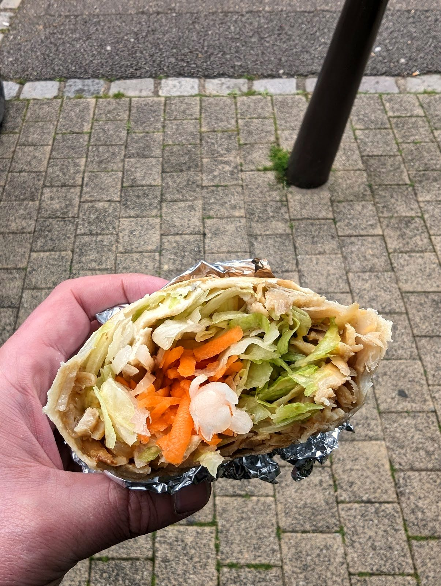
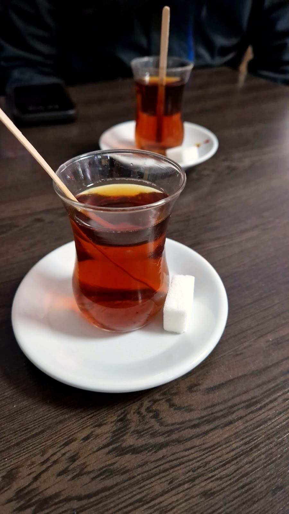
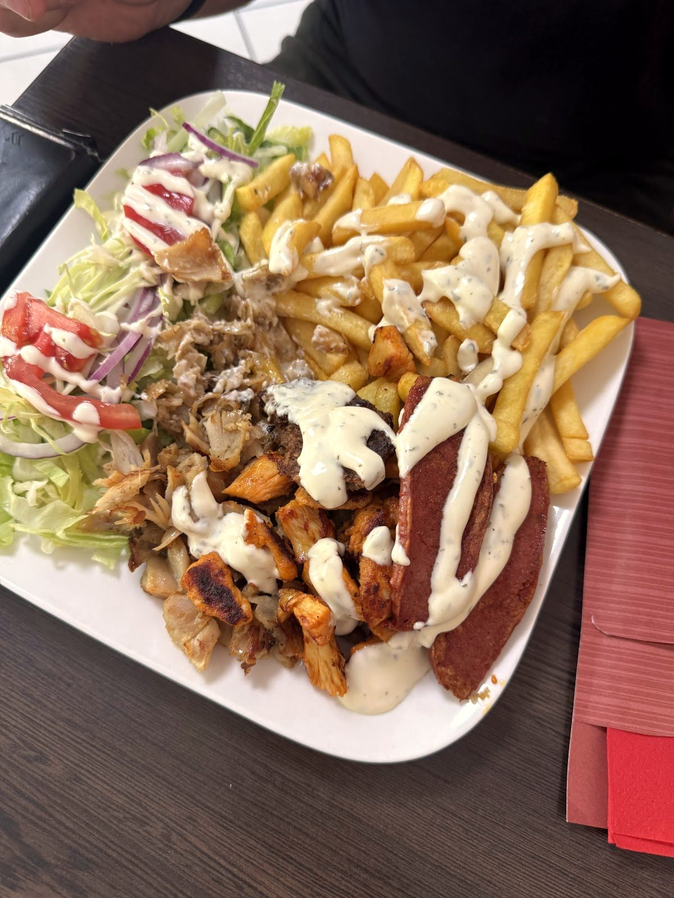
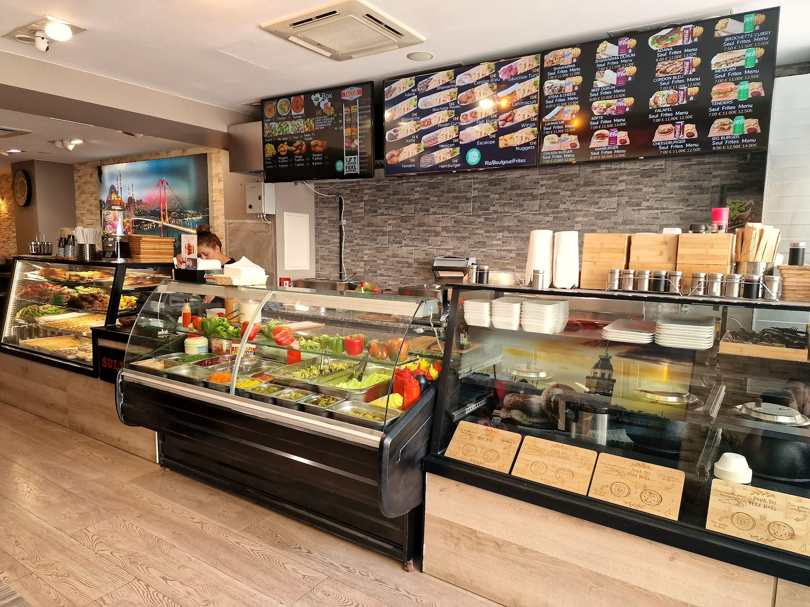
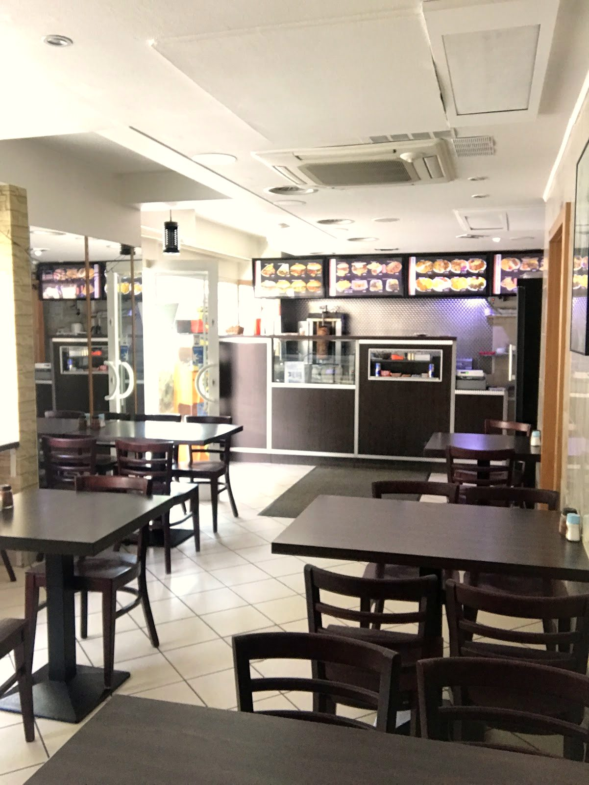
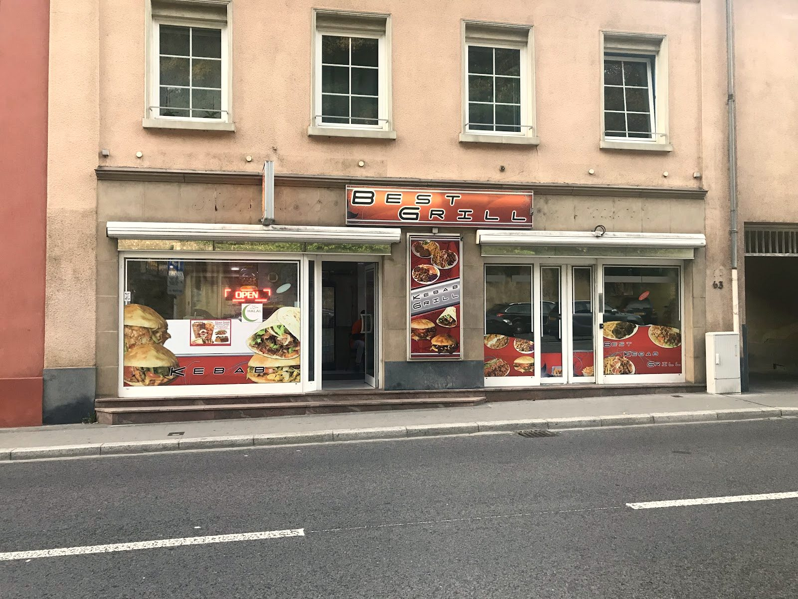

Best Grill
Le döner de Clausen, à la broche — tranché à la minute. Frais, rapide, généreux.
Simple, et rapide
Tu choisis
Assiette, dürüm ou sandwich — döner, poulet, grillades. La salade et les sauces au comptoir.
À la broche
La viande tourne sur la broche verticale et se tranche à la minute, sous la lampe chauffante.
Sur place ou à emporter
On dresse généreux, on emballe chaud. À table dans la salle ou emporté en dürüm.
La broche,tranchée minute.
La viande empilée tourne toute la journée sur la broche verticale. On la tranche fine à la commande — dorée sur les bords, fondante au cœur.
Döner de bœuf ou de poulet, dressé sur une assiette généreuse avec frites, salade croquante et sauces. Ou roulé serré dans un dürüm, à emporter. C'est l'idée de la maison : frais, rapide, sans chichis.

GénéreuxLe plein les yeux
Assiettes garnies, dürüm roulés minute, çay servi au verre — la cuisine turque de Clausen, à la broche.







Ce qu'on sert
Le döner sous toutes ses formes, les grillades, quelques burgers — et le çay pour finir.
À la broche
Du grill
Burgers & plus
Boissons
Plats d'après les tableaux et les photos publiques de la maison, à titre indicatif. Carte et prix à confirmer sur place.
Nous trouver
L-1342 Luxembourg
Dimanche : 16:30 – 22:00